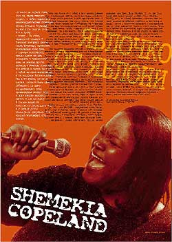

"Я вовсе не хотела петь, пока не стала немного старше, - любит повторять девятнадцатилетняя блюзовая певица Шемекия Коупленд, - но мой папа всегда знал, что я приду к этому." Ее отец, знаменитый техасский блюзовый гитарист Джонни Клайд Коупленд, постоянно подталкивал свою дочь к карьере вокалистки, только делал он это исподволь и ненавязчиво. Дома он всегда просил маленькую Шемекию спеть ему что-нибудь и часто брал ее с собой на свои выступления в легендарном Коттон-клубе. Она в то время, по ее же словам, "хотела быть просто ребенком", но живо интересовалась всем происходящим вокруг отца и даже иногда выходила вместе с ним на сцену. И только когда ей исполнилось пятнадцать лет, а у Джонни резко пошатнулось здоровье, она всерьез восприняла его призыв.Отец стал брать ее с собой в свои многочисленные туры и постепенно приучал ее выступать перед публикой. Ее скоро стали узнавать и даже приглашать спеть в разные заведения. Она сразу поняла, что больной отец под видом помощи ему в открытиях шоу и другими похожими предлогами представляет ее блюзовой публике. "Папа хотел, чтобы я думала о себе, как о его помощнице, но я-то видела, что в действительности он все это делал ради меня. Он просто показывал мне, как нужно вести себя на сцене и учил петь. Что-то как будто включилось у меня внутри, - вспоминает сейчас Шемекия, - пение сразу стало и желанием, и даже необходимостью. Теперь я уже просто не могу остановиться".
Эта внезапно возникшая страсть к блюзам, соединившись с сильным чувственным голосом и безупречным чувством ритма, вылилась в один из самых ярких дебютов на женской блюзовой сцене. Ее сравнивают не с кем-нибудь, а с молодой Коко Тэйлор (Coco Taylor), Аретой Франклин (Aretha Franklin), Эттой Джеймс (Etta James) и Рут Браун (Ruth Brown). Такие сравнения не вполне корректны, хотя и понятны. Шемекия Коупленд попросту ДРУГАЯ. Она начинает так же ярко, но ее имидж отличается от них всех. В ее манере сплавились воедино техасская (унаследованная от отца) "взрывная" блюзовая традиция, и гарлемский стиль, более рафинированный и свободный. Ко всему этому примешан отголосок госпелов - она постоянно слушала в детстве уличных исполнителей и радио. Когда президент лэйбла "Alligator" Брюс Иглауэр впервые услышал Шемекию, он сразу сказал: "Я считаю, что именно она станет следующей ВЕЛИКОЙ блюзовой певицей. У нее есть голос, образ и корни, и все это подпитывается неистощимым потоком энергии, которую она просто излучает. Мир блюза ожидал прихода подобной артистки много лет".
Дебют молодой вокалистки, альбом "Turn The Heat Up" (см. "JK" #8/1998), потрясающий сплав блюза, фанки, соул и госпел, сразу привлек к себе внимание всех любителей такой музыки. Ей удалось в нем практически все - и медленные, интимные, почти прошептываемые песни, и мощные, неистовые взрывные блюзы. Поддержанная, помимо собственной группы, такими грандами, как Майкл Хилл (Michael Hill), Джо Луис Уокер (Joe Louis Walker) и Майкл Уэлч (Michael Welch), она, по общему признанию, сделала один из самых выдающихся дебютных альбомов за всю историю блюза. Друзей - известных блюзменов - она приобрела еще во время совместных туров со своим отцом. Вместе с Джонни она появлялась перед камерами передачи "Доброе утро, Америка" и часто стояла на одной сцене вместе с такими звездами, как Джеймс Коттон (James Cotton), Бобби Раш (Bobby Rush) или Джонни Джонсон (Johnny Johnson).
На сегодняшний день, несмотря на совсем юный возраст, на счету Шемекии уже есть неоднократные выступления в престижных блюзовых клубах и приглашения на многочисленные фестивали в Америке. Если перечислять только самые известные места, то она уже пела в нью-йоркском "Chicago B.L.U.E.S.", бостонском "House Of Blues", "Blind WillieТs" в Атланте; ее приглашали на Чикагский, Североатлантический и Нью-йоркский блюзовые фестивали, а в августе ее портрет появился на обложке общенационального американского журнала "Blues Revue".
Самый важный урок, который усвоила Шемекия Коупленд за несколько лет выступлений как со своим отцом, так уже и после его смерти, была убежденность в том, что добиться успеха можно только будучи действительно ОРИГИНАЛЬНОЙ. "Никто не будет слушать исполнителя, играющего или поющего только ради того, чтобы заработать немного денег. Если я пою, то точно знаю, что я ДОЛЖНА это делать" - ее собственные слова говорят, пожалуй, о наступившей творческой зрелости. Остается только набраться терпения и ждать, что же она споет нам в XXI веке.
По материалам "Alligator
Records"подготовил
Борис АРКАДЬЕВ
Перепечатано из журнала Jazz-квадрат